Class 10 Science Notes
Interactive CBSE Class 10 Science notes from Notesflix 101. They follow the CBSE syllabus and NCERT textbook for Class 10. Each chapter is broken into short parts with easy explanations, picture stories, flash cards, quizzes and board-style exam questions with model answers. 1 of 23 parts are free to read with no password. The other parts open with a password from Notesflix 101.
Chapters
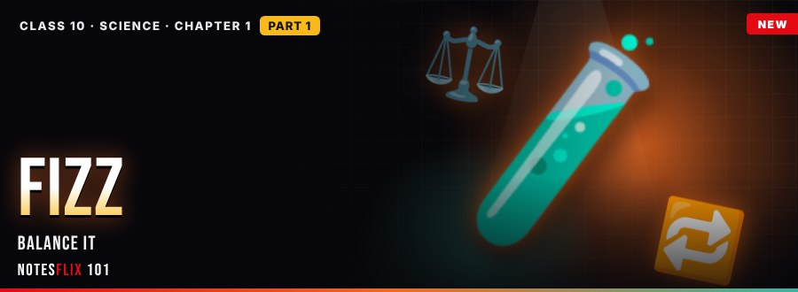
Chemistry 1: Chemical Reactions and Equations
Reactions, equations and types
- Fizz Lab — Part 1FREE — Signs of a chemical reaction, balanced equations and the four main types of reaction. (30 min)
- Rust Patrol — Part 2PASSWORD — Oxidation and reduction, why iron rusts and how to stop it, and why food goes rancid. (30 min)
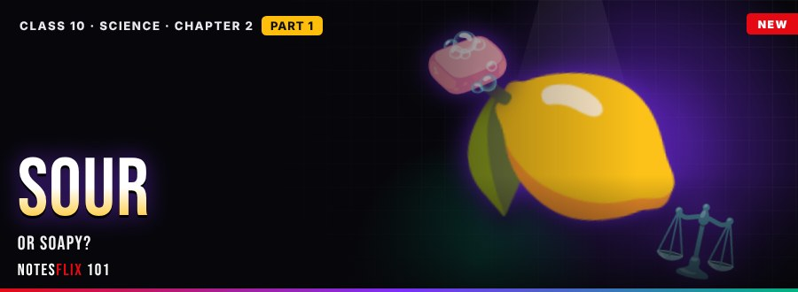
Chemistry 2: Acids, Bases and Salts
Sour, soapy and neutral
- Sour or Soapy — Part 1PASSWORD — Indicators, the pH scale, acid reactions with metals and carbonates, and neutralisation. (30 min)
- Salt Shop Mystery — Part 2PASSWORD — How salts form, uses of baking soda, washing soda, bleaching powder and plaster of Paris, and pH in daily life. (30 min)
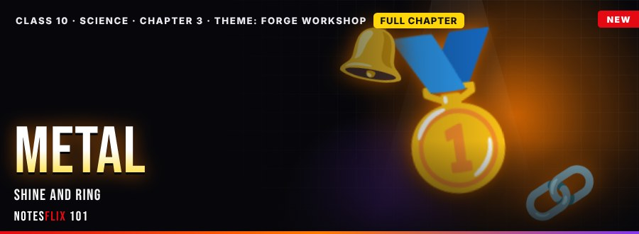
Chemistry 3: Metals and Non-Metals
Shine, ring and conduct
- Forge Puzzle — Part 1PASSWORD — Properties of metals and non-metals, the reactivity series with displacement, and ionic bonding in sodium chloride. (30 min)
- Smelter Run — Part 2PASSWORD — Concentration of ores, roasting and calcination, reduction with carbon, electrolytic refining of copper, and corrosion with its prevention. (30 min)
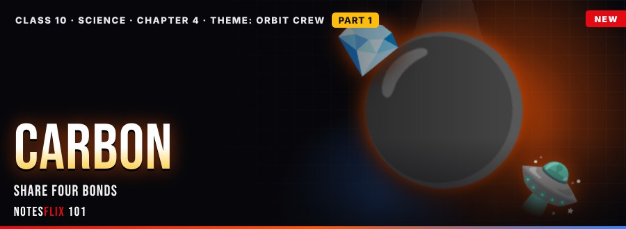
Chemistry 4: Carbon and its Compounds
Share, link, build
- Orbit Crew — Part 1PASSWORD — Covalent bonding with valency four, the allotropes diamond, graphite and fullerene, and saturated and unsaturated hydrocarbons in a homologous series. (30 min)
- Orbit Crew — Part 2PASSWORD — Functional groups, ethanol and ethanoic acid, esters with a live calculator, and soap with micelles and detergents. (30 min)
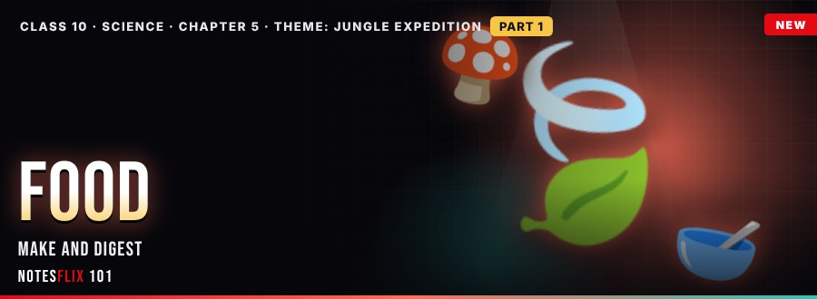
Biology 5: Life Processes
Make, eat, digest
- Jungle Trek — Part 1PASSWORD — Photosynthesis in leaves, heterotrophic feeding by saprophytes and parasites, and digestion and absorption in the human gut. (30 min)
- Heart of the Jungle — Part 2PASSWORD — Aerobic and anaerobic respiration with a live calculator, the heart and blood vessels, and the nephron with a urine calculator. (30 min)
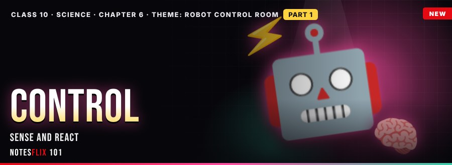
Biology 6: Control and Coordination
Sense, signal, react
- Signal Check — Part 1PASSWORD — Neurons and nerve impulses with a live travel-time calculator, reflex action and the reflex arc with a reaction-time calculator, and the parts of the brain. (30 min)
- Slow Signal — Part 2PASSWORD — Endocrine glands with an adrenaline calculator, hormone feedback and disorders with a blood sugar calculator, and plant hormones and tropisms with an auxin calculator. (30 min)
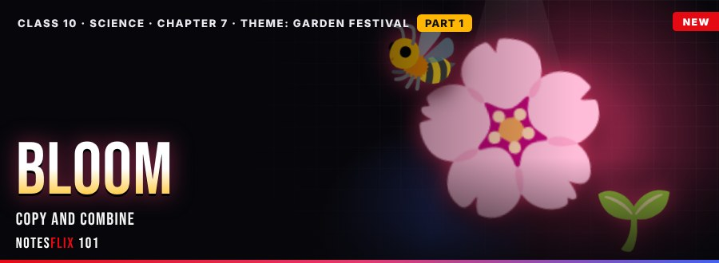
Biology 7: How do Organisms Reproduce?
Copy, combine, bloom
- Seed Parade — Part 1PASSWORD — Fission, budding, regeneration, spores and cuttings, then the flower, pollination and fertilisation, with calculators, a memory match, true/false rush and a boss battle. (30 min)
- Festival Lights — Part 2PASSWORD — Puberty and the male system, the female system and pregnancy with the placenta, and contraception and health, with calculators, memory matches, true/false rushes and a boss battle. (30 min)
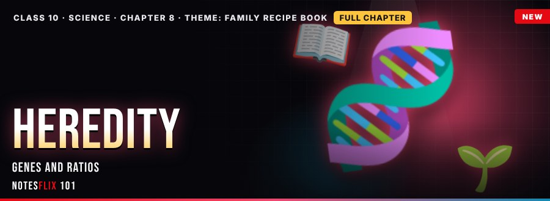
Biology 8: Heredity
Traits, ratios, sex
- Recipe CardsPASSWORD — Variation and inherited traits, Mendel's pea crosses with a live Punnett square and the 3:1 ratio, and how the sperm decides sex, with memory matches, true/false rushes and a boss battle. (35 min)
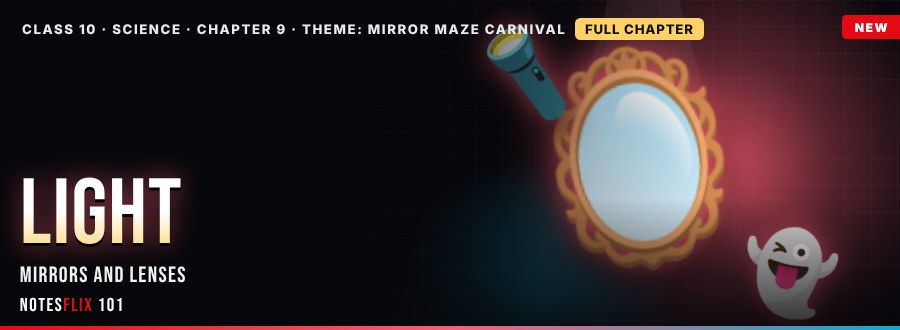
Physics 9: Light: Reflection and Refraction
Mirrors, lenses, rays
- Maze RunnerPASSWORD — Laws of reflection, plane, concave and convex mirrors, the six concave cases, sign convention and the mirror formula with live calculators, memory matches, true/false rushes and a boss battle. (35 min)
- Bend ItPASSWORD — Refraction, Snell's law and refractive index, convex and concave lens images, the lens formula and power in dioptres, with live calculators, memory matches, true/false rushes and a boss battle. (35 min)
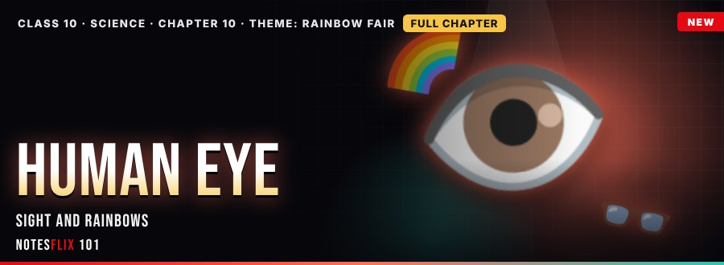
Physics 10: Human Eye and Colourful World
Eye, defects, rainbows
- Clear ViewPASSWORD — Parts of the eye, accommodation, near and far points, myopia, hypermetropia and presbyopia with live lens-power calculators, memory matches, true/false rushes and a boss battle. (35 min)
- True ColoursPASSWORD — Dispersion by a prism, how rainbows form, atmospheric refraction, the Tyndall effect and why the sky is blue and sunsets red, with calculators, memory matches, true/false rushes and a boss battle. (35 min)
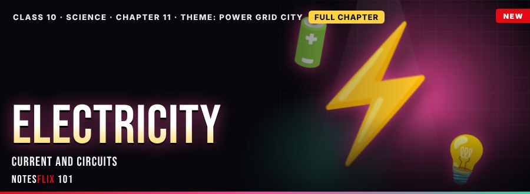
Physics 11: Electricity
Current, Ohm, circuits
- Lights OnPASSWORD — Current and potential difference, Ohm's law, resistance and resistivity, and series and parallel resistor circuits with live calculators, memory matches, true/false rushes and a boss battle. (35 min)
- Hot WirePASSWORD — Joule's law of heating, electric power and energy, fuses, filament bulbs and electricity bills with live calculators, memory matches, true/false rushes and a boss battle. (35 min)
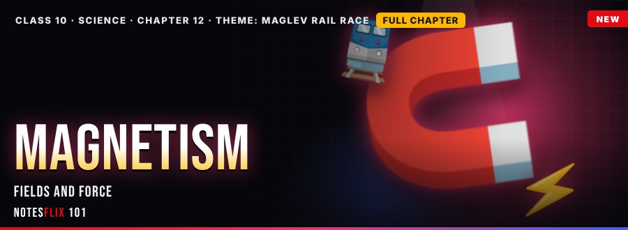
Physics 12: Magnetic Effects of Current
Fields, force, AC
- Float OnPASSWORD — Magnetic fields and field lines, fields from wires and solenoids, Fleming's left-hand rule, motors, induction, AC and DC and domestic circuits with live calculators, memory matches, true/false rushes and a boss battle. (40 min)
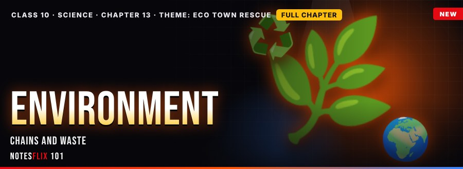
Biology 13: Our Environment
Food chains, ozone, waste
- Rescue MissionPASSWORD — Ecosystems and food chains with the 10% law, ozone depletion and CFCs, biodegradable waste, biomagnification and the 3 Rs with live calculators, memory matches, true/false rushes and a boss battle. (35 min)
Frequently asked questions
Are the Class 10 Science notes free?
1 of 23 parts are free to read with no password. The other parts open with a password from Notesflix 101.
Which syllabus do these Class 10 Science notes follow?
They follow the CBSE syllabus and NCERT textbook for Class 10. Every chapter is split into short interactive parts with simple explanations, flash cards, quizzes and board-style exam questions with model answers.
How many chapters are covered?
13 chapters: Chemical Reactions and Equations; Acids, Bases and Salts; Metals and Non-Metals; Carbon and its Compounds; Life Processes; Control and Coordination; How do Organisms Reproduce?; Heredity; Light: Reflection and Refraction; Human Eye and Colourful World; Electricity; Magnetic Effects of Current; Our Environment.
Is there a practice test for Class 10 Science?
Yes. The Class 10 Science Practice Marathon has 642 multiple-choice questions taken from the notes: a weekly marathon (30 questions, 20 minutes, the same set for everyone that week), a 10-question sprint, a 100-question mega marathon and chapter practice. A free sample is open to all; the full bank opens with the subject password.
How do I get the password for locked notes?
Email support@notesflix101.com with your name, class, school and the Gmail ID you sign in with. The same password opens every locked Science note.